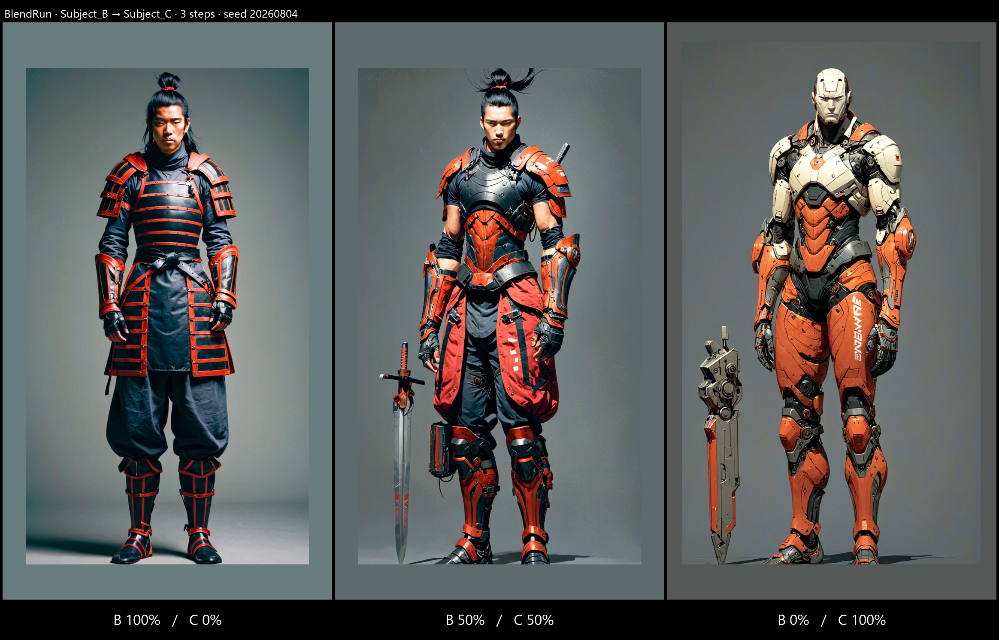

Subject_B → Subject_C (samurai → cyborg) deliberately: this is the pairing that produced the extra arms, so a regression would show rather than hide. Each run holds ONE seed across its steps; references are pinned per run and drawn from the seed, so every run picks its own.
| check | result |
|---|---|
| No bucket above the 0.70 ceiling | PASS — 16/16 renders |
| End-caps resolve to 0.7, not 1.000 | PASS — all 6 endpoints |
| Per-Subject label tracks the blend | PASS — samurai alone at the start,
both in the middle, cyborg alone at the end |
| Framing (scale_lock applied) | PASS — factor 0.82–0.91, no render skipped |
The weight ceiling is applied as a per-bucket clamp, so every value above 0.70 collapses
onto 0.70. In the 8-step run Subject_B reads 0.7 at rungs 1, 2 and 3 — 1.000,
0.857 and 0.714 all land on the same number. The intended 86/14 ratio of 6:1 renders as 4.9:1.
That is a side effect of the extra-arms fix and it works directly against a clean gradient. The repair is to scale the whole set so the strongest reference sits at 0.70 and the RATIO between them is preserved, instead of clamping each one independently. The anatomy protection is identical either way — the strongest bucket is still capped at 0.70.
pinned references — B: il_1588xN.7633026715_pp5d.jpg · C: 6d80a9d3c04f0227f9a66407e7e69ea2.jpg

pinned references — B: ss.jpg · C: 6d80a9d3c04f0227f9a66407e7e69ea2.jpg

pinned references — B: sw2323.jpg · C: fd4ae844b2eaf72150596ae303d169b6.jpg